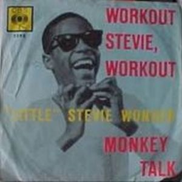
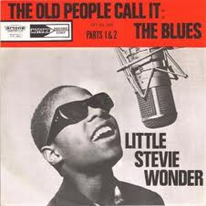

Después del extraordinario éxito del anterior disco en vivo del pequeño Stevie, la Motown se plantea lanzar un nuevo álbum
-Workout Stevie, Workout- conteniendo material inicial de Stevie como su single debut de 1961,
I Call It Pretty Music (But The Old People Call It The
Blues) o Monkey Talk, dándoles un estilo más "Fingertips", incluyendo tambien temas instrumentales con la participación de los
Funky Brothers y el pequeño Stevie Wonder a la armónica.
La producción corre a cargo de Clarence Paul Paul y
W.Stevenson, pero el resultado no fue todo lo bueno que esperaba la Motown, siendo retirado del mercado y remplazado por
With A Song In My Heart. Temas como Contract On
Love, es de nuevo tenida en cuenta e incluida en 1966 para su disco Uptight.
 